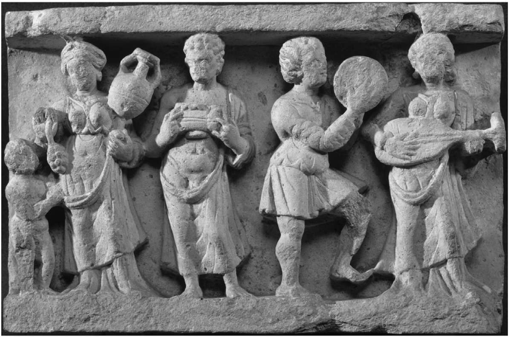
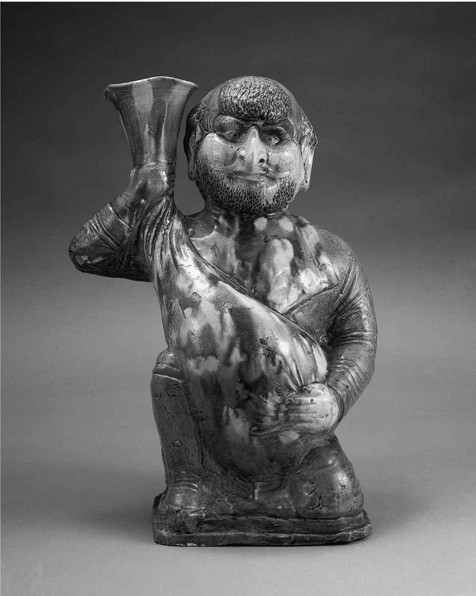

乌鲁木齐的大巴扎 [15] 如今早已被一个购物中心所取代，里面有家乐福超市和肯德基快餐店。但单看外面步行街上的那座骆驼铜像，还真说不清这是在哪里。直到21世纪初，二道桥大巴扎一直是个挤满了顾客和商人的火灾隐患。一个角落里的漂亮纺织品熠熠生辉，里面有维吾尔和乌兹别克妇女穿的中亚艾提来斯（etlas）纹样的裙子：其上的丝绸与垂直的曲折色带共舞——或者也常有用涤纶替代丝绸的。还有成串的淡水珍珠，成排的地毯，一盘盘镶嵌着珠宝的小刀。但这里也是个生意兴隆的食品市场，本地的维吾尔人、汉人和回民（中国穆斯林）和观光客一起拥挤在狭窄的通道里，从整扇整扇的羊肉下钻过，呼吸着羊肺和羊杂汤的热气，一路上低头可见黄杏、杏仁、马奶葡萄、白葡萄干、胡椒、长豆角、番茄、大葱、芫荽、孜然、红辣椒，以及红茶和绿茶。
1990年我第一次去二道桥时，在排档外面走过，维吾尔族厨师在里面的摊位上烤羊肉串，把馕和羊肉洋葱馅的烤包子（samsa，和“咖喱角”是同一个词）从黏土烤炉里钩出来。两个戴着素色头巾、突厥人长相，一眼就能认出是哈萨克人的妇女蹲在墙边。两个女人中间，在她们刚吃完的一堆西瓜皮旁边，立着一只肮脏的十升装塑料油瓶。“马奶酒，马奶酒！马奶酒——马奶酒”——马奶酒！她们喊着。只需掏出价值区区几个便士的破旧中国钞票，她们就会拧下瓶盖，把米白色的泡沫液体倒进一只有缺口的青花饭碗。我提心吊胆地闻了闻。有一股奶酪一样的咸味；浅灰色的表面上泛有微小的泡沫。我喝了一小口，又喝了一大口，最后一饮而尽。
马奶酒是发酵的马奶，味道像美味的酸奶饮料，或是冒泡的稀薄酪浆，略带一点酒精味。刚刚从令人窒息的巴扎挤出来，那马奶酒喝起来清爽可口，我二话不说又买了一碗。
史学家们常说起15世纪末欧洲人抵达美洲后发生的动植物“哥伦布交流”。旧世界的作物、杂草、家畜和病菌在短短几十年时间里改天换地，对美洲人口不啻是一场浩劫，最显著的破坏来自旧世界的细菌在此前绝无先天或后天耐受力的美洲土著中引发的传染病。被带到旧世界的新世界作物包括胡椒、番茄、土豆、玉米和烟草，也同样产生了重大影响：中国的人口和经济规模从16世纪到18世纪翻了一番，部分原因就是来自新世界的玉米和白薯可以在不毛之地生长，为农民提供了廉价的替代热量，让他们得以出售大米和其他细粮。久而久之，起源于欧洲的技术优势传播到了美洲，美国相对较早地采用了整套技术和经济创新，开始了我们所谓的工业革命。
丝绸之路上也发生过类似的交流，不过其特征并非突然的接触，而是跨越数千年的无数次邂逅。虽然欧亚大陆东部和西部各民族从未彼此完全隔离，但长期的跨欧亚交流把此前各自独立的新石器时代农业系统联结了起来，互相吸收和补充。考古学家和历史学家认为，中国和东亚的农业发展独立于新月沃土、埃及和印度。欧亚大陆西部的早期农业起初建立在小麦和大麦耕作的基础上，东亚则是依靠小米和大米。然而，从史前时代开始，能够为人类所利用的各种动植物一直就是在这些起初截然分离的极点之间扩散和传播的。
二道桥大巴扎就位于欧亚大陆的地理中心，那里的每一个角落都明白彰显着跨欧亚生物和技术交流的历史和现实。熙熙攘攘的人群的面孔带着中国人、突厥——蒙古人和伊朗人的特征，暗示着从古到今的多次迁徙；最近的DNA研究证实了这一说法，并指出实际情况可能更加复杂。市场上出售的很多蔬菜和肉类正是中国、印度、波斯和/或西南亚动植物杂交的产物。我拿来喝马奶酒的廉价青花瓷碗虽然是现代工业品，却再现了欧亚大陆与中国共有的色彩和样式，是伊斯兰世界、中国和西欧之间从9世纪到19世纪相互交流的成果。当然，养蚕术的传播也涉及动物（蚕）和植物（桑叶）以及织布技术的西渐。
马奶又如何呢？马的驯化对人类历史的影响没有任何其他动物能及，它彻底改变了劳动、运输和战争的形态。人和马的这一长期合作始于欧亚大草原，压轴戏也发生在那里。战车技术跨欧亚大陆的传播就是最早的绝佳范例之一，说明了军事技术扩散之快、影响之广。
就连我饮用发酵 奶这个事实也讲述了一个令人着迷的故事，事关在欧亚大陆的两端人类自然选择以及各种基因和文化共同演化的不同模式。能够耐受乳糖的人群发生了突变，使得他们直到成年一直可以持续产生乳糖酶，用于分解奶中的乳糖。这些突变只是区区几千年前（人类驯化了奶牛之后）才开始独立发生在非洲——欧亚大陆的不同地区，乳糖酶续存性一直最普遍地出现在北欧人后裔中。另一方面，东亚人口的乳糖酶续存性出现比率极低，就算在游牧民族中也是如此。但让奶发酵的细菌可以把奶中的乳糖分解成容易吸收的糖类。因此，发酵的奶制品（乳酪、马奶酒、酸奶、酸乳酪、克非尔 [16] 等）是蒙古人和哈萨克人饮食的一大特点。13世纪的欧洲僧侣兼旅行家鲁不鲁乞得知他遇到的游牧民族喝“酸奶”或马奶酒时，着实吃了一惊。
奶制酒精饮料相对罕见，但几乎每一个人类文化都用谷物和水果开发了酒精饮料。各种酒精饮料大致可算作文化趋同的一个例子：在不同地区，人类的发展平行而彼此独立。但二道桥大巴扎的葡萄，那些压弯了费尔干纳的藤架或是在吐鲁番炎热的沙漠空气中变成甜葡萄干的葡萄，却是从西方输入的，从地中海向古代和当代中国传输葡萄酒及其文化的欧亚通道也与丝绸之路有关。
最后，二道桥的烹制食品也会让我们想到各种烹饪方式如何在欧亚大陆之间传播。大陆上随处可见的面条与馅食既可以例示扩散，也可作为文化趋同的范例，但用于制作这些食品的小麦则是在新月沃土率先驯化，并逐渐传入中国北方，使得那里的农民可以种植第三种越冬作物。于是像中亚一样，小麦——而非大米或小米——成为中国北方的主食。折边包馅的面食这种特殊的小麦制食品或许可以被看作典型的丝绸之路食物。
DNA（脱氧核糖核酸）与人类的迁徙
DNA年表和化石证据表明，7万——13万年前，解剖学意义上的现代人类（智人）经由中东地区走出了非洲。他们跟着成群的大型食草哺乳动物走上了欧亚大草原，在那里分道扬镳，各向东西，取代了早期的直立人和尼安德特人，并有可能与其混种。这些远道而来的旅人是丝绸之路上的先驱——也是我们大多数人的祖先，还是现代非洲人和更近期迁出非洲之人的远亲。3万——4万年前，人类迁徙到了东亚（新的遗传学证据表明，东亚人不太可能是由中国本地的直立人群体独立演化而来的）。大约在最后一次冰川期，最多25 000年前，一些人利用海平面较低的优势，通过东北亚和阿拉斯加到达了美洲。另一群人迁徙得更早，在大约4万——6万年前，沿着欧亚大陆南部，经过印度尼西亚，最后在澳大利亚定居。
大约17 000年前，随着最后的冰川撤退，欧亚大陆上的各民族开始分化为独特却并非孤立的语言和文化群体，也就是旧世界各种不同的文明。尽管最早的动植物驯化发生在大约一万年前的中东地区，但欧亚大陆和美洲的不同族群也都成功完成了各自独立的驯化。考古学和基因数据显示出一个复杂的模式，即在非洲——欧亚大陆，某些驯化（例如牛）曾在不同的地点多次独立发生，而其他动植物（包括马）的驯化则可能首先发生在一个地点，随后驯化物种通过跨欧亚交流的机制，连同饲养和种植技术一起传播开去。这个过程一直延续到有史时期，至今仍在发生。从1990年代以来，以乌鲁木齐为首府的新疆成为世界上最大的番茄产地，那可是新世界的作物，直到公元16世纪和“哥伦布交流”之后，才传到欧亚大陆来的。
DNA研究虽然仍属新兴领域，但也能提供相关信息，或是证实我们从考古证据和史料中所知的关于其他跨欧亚大迁徙的情况，包括那些对丝绸之路产生过重大影响的迁徙。在哈萨克斯坦发现的人类遗骸上研究线粒体DNA的科学家们发现，可以追溯到公元前7世纪及更早的样本中含有与欧亚大陆西部世系（单倍群）有关的标记，却没有欧亚大陆东部的标记。这与语言学家和考古学家的说法吻合：驯化了马并使用马车之后，说原始印欧语的人向西行进，进入了大草原的深处。当然，希罗多德笔下的斯基泰人起初就属于欧亚大陆西部世系，他们说伊朗语的事实就能说明这一点。
如此说来，在新石器革命后的一千年里，第一波迁徙潮的主要方向看来是从西方到东方。因此，如今安放在新疆维吾尔族自治区博物馆、至今保存完好的那些制作年代在公元前1800年到公元200年的塔里木盆地“木乃伊”，看上去很像“欧洲人”（尽管他们及其祖先都不太可能来自黑海以西的地方）就不足为奇了。他们也拥有欧亚西部的基因标记，是因为来自这些单倍群的人都住在中央欧亚。其他类型的证据——包括希腊和印度语源的名字，以及数个世纪之后的文本——都让学者们认为，其中至少有一些人生前说的是吐火罗语，也就是原始印欧语的一种早期派生语言。吐火罗语本身可能又与贵霜帝国有关，或许也和被匈奴从如今的中国西部赶到阿富汗和阿姆河沿岸的月氏部落联盟有关。
对于哈萨克斯坦古代遗骸的分析还有另一个发现。年代为公元前7世纪以后的样本中含有欧亚西部和东部的单倍群混合标记——混合比例几乎恰好是五五开，此外还有一些与印度有关的单倍群。因此，大约公元前4千纪开始从西方迁出的迁徙潮，在公元前1千纪中期前后又全面回迁了，当时东部后裔各民族正在向西扩张：在公元1千纪到2千纪，向西扩张的或许先是原始匈奴人，紧随其后的是突厥人和蒙古人。中央欧亚的现代人口高度异质化，每个人都同时具有欧亚西部和东部的标记。这正是我们应该在丝绸之路沿线各民族身上看到的情况。
蒙古人的生物学遗产
征服欧亚的蒙古人也留下了自己的基因遗产。在曾经属于蒙古帝国版图的地方，大约有8%的男性的Y染色体上有一个独特的标记，可以追溯到700—1000年前的蒙古。关于这个标记的最佳解释是，成吉思汗前几代的一个男性祖先的Y染色体上携带着一个无害而独特的变异。成吉思汗和他死后留下的王朝也携带着同样的遗传标记，起初携带此基因的人数很少，但他们个个儿孙满堂，因而其基因印迹遍及欧亚。实际上，蒙古人的基因遗产甚至要远远大于这种男性世系的标记所提示的，因为我们无法通过女性的基因标记来追踪蒙古的后裔。
然而也有人说，蒙古人最大的人口统计学遗产并不是增加而是大幅减少了人口。这不仅是因为他们使用暴力，有时还会以屠杀为战略，还因为他们促成了导致瘟疫的鼠疫杆菌的扩散。1346年，蒙古人在攻打克里米亚的卡法城（Kaffa）时，把死于瘟疫之人的尸体投到城里，以加快攻城的进度。意大利商人又把受到感染的老鼠、跳蚤和人从卡法传播到地中海和西欧。在欧洲，黑死病杀死了三分之一的人口；在伊朗、伊拉克、叙利亚、埃及和北非也造成了恐慌，对港口和贸易城市的打击尤其沉重。
曾经的流行观点认为，蒙古人无意间把瘟疫从中国西南部带到了欧洲，在此过程中，中央欧亚大草原的土拨鼠和其他啮齿类动物温暖舒适的洞穴成为疾病的永久存身之所，因为跳蚤和瘟疫细菌可借以越冬。以这种观点来看，瘟疫就是最初的全球化者造就的传染病。这个理论的问题在于，没有明确的证据表明14世纪中国发生的传染病就是瘟疫，或者表明当时在印度或中亚的各个丝绸之路城市爆发过任何传染病，且该瘟疫可能经由丝绸之路传播到了欧洲。瘟疫的确是大草原上所特有的，但没有任何历史证据表明其发展成型的具体时间——那很可能是在蒙古帝国之前。
和丝绸之路的其他故事一样，基因组测序让人们了解到一些新的细节。与采自其他任何地方的样本相比，从现代中国取样的鼠疫杆菌样品显示出最显著的系统发育多样性——这说明中国是其发源地。此外，某些试验表明，这种疾病最古老的品种同样出现在中国。然而，基因组测序过程鉴定，在前苏联发现的多个变种才是该基因树的根源。因此，虽仍然不清楚瘟疫究竟始自何方，但我们可以说，蒙古人无意间帮助瘟疫从欧亚大草原传播到了北欧和地中海，也有可能从大草原传播到了中国北方。
马与跨欧亚王室文化
在如今的英语世界，我们对马所怀有的喜爱与尊重不逊于我们对狗的态度。我们给马取名字；为它们的特质赋予人性；还围绕着它们设计各种活动（马术表演、赛马会、猎狐等），作为精英社会阶层的标志。马可不是养来吃的。
然而，很久以前在欧亚大陆，我们的祖先把马匹看作供狩猎的可食猎物。人类一定在驯化马之前就理解了马的行为，这可能是因为在狩猎某个野生的马群品种时与之有了长期的接触和观察。在驯化了牛和羊很久以后，马仍然充满野性。实际上，考古学记录并没有直接揭示出马最初是何时驯化的；尽管在很多考古遗址都发现了马科动物的骨头，但这些马也可能是狩猎得来或食用之前短期饲养的。
公元前5千纪末到公元前4千纪初的气候变化将整个欧亚大陆笼罩在严寒中，或许打破了原有的平衡。马匹在冬天获取食物的能力胜过了牛羊：它们可以用蹄子扫清地上的积雪，踩碎覆盖着水源的冰层，而其他食草动物只会使用自己柔软的鼻子。或许因为在更严寒的冬日需要进食肉类，欧亚大陆的人——同样，很可能是黑海和里海以北的大草原上的居民——开始捕食母马。大约在公元前4800年后，人类利用捕获的母马成功地培育出一匹种马。遗传学家告诉我们，如今世界上所有的家马都是那匹公马的后代。它可能相当温顺，这符合人类的需求，而考虑到野生的公马会戒心极强地守卫自己的“后宫”，在这种竞争压力之下，与人类合作或许是这匹马获得交配对象的唯一选择。
第一批家马的饲养目的是肉用家畜，或许也是马奶的来源，而不是作为运输工具。曾经有人认为，直到公元前2500年，人类才驯化了马，并且马匹最初是被套在货车上的，后来才直接骑乘。但一种测量青铜时代前马匹牙齿磨损程度的巧妙方法表明，从至少公元前3700—前3000年起，很可能是为了捕猎其他马匹，哈萨克大草原上的人就开始用非金属的马衔来骑马了——这可能要早于更靠西部的地区。
从大约公元前4800年起，马匹开始出现在坟墓和雕刻物的象形文字中，起初只是被描述为驯化动物的一种，但后来就被用作力量、活力或贵族地位的象征——它们至今仍有这样的象征意义。战车的兴起巩固了马匹在战略和军事上的重要性，虽然在公元前1千纪，战车本身便不再用于战事了。马匹被埋在皇家陵墓中陪葬，有些带有战车，有些则不带：这样的古墓遍布欧亚大草原，乌克兰、俄罗斯、哈萨克斯坦、西伯利亚和新疆处处可见。希罗多德描述过一个青铜时代的斯基泰王陵，有50匹骏马陪葬。秦始皇在西安郊外的陵墓或许以更大的规模呼应了同样的欲望：除了成千上万的陶俑武士之外，他的陵墓中还有供他本人在极乐世界驰骋的陶马和战车。
马匹和丝绸一样，在中国与北方大草原各民族和丝绸之路的关系中扮演着重要角色。像中东、波斯南部或印度一样，中国的大部分地区都不适宜养马，需要从蒙古大草原和西藏高原持续补充牲畜。这些动物是头大毛长、鬃毛粗硬的马驹，与亚洲原有的普氏野马（这种野马是以19世纪“发现”了这种动物的波兰裔俄罗斯探险家 [17] 的名字来命名的）是近亲。普氏野马如今只存活于动物园和保护区。
公元前2世纪，张骞报告说河中地区“多善马，马汗血，其先天马子也”。 [18] 这一说法启发了中国人关于高大的阿拉伯马的生动想象，把它们和半幻想的西方极乐世界、天堂，甚至龙联想在一起，在他们的想象中，最好的马是龙的子嗣。出生于唐朝的边陲哨所，即如今哈萨克斯坦或吉尔吉斯斯坦境内的中国诗人李白就曾在《天马歌》一诗中以狂放的笔触写下“天马来出月支窟，背为虎文龙翼骨”。汉朝将军李广利远征到费尔干纳，带回一群“汗血”马。后来的帝国，尤其是唐朝，依靠贸易和外交互赠从北方和西方换得马匹。8世纪中叶的一次叛乱几乎推翻了这个王朝，唐朝被迫以高价从曾经对它施以援手的回鹘游牧部落收购马匹，每匹马的价格大约是40匹丝绸。
唐朝需要马匹是出于军事原因，但同时也因为其带有游牧色彩的贵族投入大量时间和金钱培养了所谓的“欧亚大陆王室马文化”；与阿拉伯使者交易宝马更助长了这种迷恋，唐朝贵族对皇家狩猎和马球的热爱也反映了这种迷恋——在当时的绘画和雕像中，甚至出现了妇女马球比赛的场面。马球是从波斯（那里的妇女和国王也玩马球）经过新疆的绿洲城市传入中国的，继而又从中国传到了高丽和日本。与此同时，拜占庭也同样从萨珊王朝治下的伊朗学会了一种马球的玩法，在伊斯兰教扩张之后，伊斯兰世界仍然非常流行马球。拜占庭和唐朝宫廷都有自己的马球场。与西洋棋、框架故事寓言以及鲁特琴一样，马球也是文化从波斯和印度中心向欧洲和东亚的丝绸之路外围地带传播的一个例子。
最早有关马球的记录之一来自伊斯兰教之前的波斯民族史诗、菲尔多西的《列王纪》。在伊朗（定居的文明中心）王子夏沃什和图兰（游牧突厥人的国土）国王阿夫拉西亚伯之间进行了一场剑拔弩张的比赛，双方在马球场上演了历史和文明的对决：
19世纪，英国人在印度自治领上学会了这种“国王的运动”，并为其制定了正式的规则，因此英国人也是从欧亚贵族做派的深井中汲取了精华。英国皇室至今仍在玩这个游戏。
马球的技巧和价值观念当然也来自狩猎和战争，特别是在马背上进行的战争。这三种活动都需要骑马技巧，整个欧亚大陆的君主都热衷于此，也都曾是精英地位的标志。起初被放牧用作肉食来源的马匹成为运输的工具，使得游牧民族扩张到大草原深处，在那里，它们和骆驼一样，成为丝绸之路上长途陆路旅行的交通工具。中央欧亚的部落民族在饲养和骑乘马匹方面的相对优势，确保了他们相对于欧亚大陆边缘的定居农业社会的军事优势，在某些地方，这种优势一直持续到18世纪；第一次世界大战期间，马匹仍被用于军事实战，时至今日，由于它们与战争、统治地位和权力的关联，骑马表演仍然会出现在各种国家典礼上。
社会学家与经济学家约瑟夫·A.熊彼特认为，现代帝国主义并非像马克思主义者认为的那样，是由经济推动的，而是由统治阶级的一种无目的的征服欲望推动的，在社会阶层和意识形态上，这种统治阶级的起源是中世纪的骑士。即使到了20世纪初，这些贵族还是充满怀旧的心态和返祖的激情，其怀想对象就包括马匹和狩猎。他写道，阿拉伯、波斯和蒙古的骑手，乃至欧洲封建社会，都对同一个植根于战争和骑术的君主特质有所认同——如此就构成了“跨欧亚王室文化”。
饶有讽刺意味的是，熊彼特本人也喜欢骑马，不过众所周知，他对自己的本领，至少对自己的骑术谦抑有加。据称他曾说：“我早年有三个宏愿。我想成为世上最伟大的经济学家、奥地利最伟大的骑手、维也纳最风流的情人。可是，我从未能成为奥地利最伟大的骑手。”
葡萄酒
在丝绸之路上，文化趋同（相似的现象独立发生在不同的地方）和扩散（特定事物从一处蔓延到另一处）的例子比比皆是。主食谷物和牛在不同的地方多次被驯化；马的驯化和丝绸制作工艺首先在一地得到发展，但随后又被其他各地的人们急切获取和传播，盖因它们能够满足人类对军事实力、权力象征和艳丽服装的普遍追求。
酒精饮料则同时是文化趋同和扩散的范例。所有种植和储藏谷物的社会同样发现了谷物在水、酵母和其他成分的混合物中如何发酵，变成啤酒的过程；很多地方还会把水果发酵变成果酒。这些饮料除了富含营养成分外，还含有影响精神行为的复合乙醇。
可能是由于我们对酒精所共有的生理反应，因而尽管在习俗和社会意义上存在着很多明显的细微差别，欧亚大陆和全世界酒精饮料的消费都与某些相同的东西有关。例如，包括欧西里斯和哈索尔（“醉酒夫人”）在内的很多古埃及男女神灵都与酒精有着特别的联系。古埃及人在公元前4千纪就已酿造了复杂的烤面包风味的啤酒和红葡萄酒，前者是大众喝的，后者主要供精英阶层享用。埃及人的坟墓和神庙绘画常常会描绘饮酒的场面，酒精饮料也是葬礼上的主要物品。埃及人可能认为，酒醉可以促成与死者和神灵的交流。
美索不达米亚人也喝啤酒和葡萄酒。《吉尔伽美什》是一部古老的史诗，其中已知最早的诗歌可以追溯到公元前2千纪初；在这部史诗中，妓女夏姆赫忒（Shamhat）用自己的身体和大量啤酒引诱野人恩奇杜（Enkidu）走出荒野，加入人类的阵营。后来，当吉尔伽美什寻找通往冥府的道路时，是一个酒馆的老板娘给他指明了方向。
古代中国也从大约公元前4000年就开始酿造酒精饮料，最初是用谷物酿制，因而是一种啤酒（汉字“酒”用于表示所有的酒精饮料，但常被错误地英译成“wine” [19] 。酒精是祭祀祖先的仪式中不可或缺的物品，中国早期的好几种青铜器都是专门用于为亡人加热和供奉这些奠酒的。在中国，和其他地方一样，饮酒也是人们日常聚会上的主要活动。商朝（公元前1600—前1046年）末年，纣王“以酒为池，县肉为林，使男女倮，相逐其间，为长夜之饮” [20] ，这甚至可能加速了王朝的灭亡。虽然酒精饮料是在很多不同的地点独立发明的，也应该说在所有地方，美酒通常都或多或少地与欢乐、爱情和超验有关。
但葡萄酒——特别是以酿酒葡萄经驯化的野生亚种所酿制的酒——却并不普遍，至少起初并不普遍。它最终在欧亚大陆随处可见，是丝绸之路传播的结果。就像养蚕业始于中国而后传播到了西方一样，葡萄栽培始于欧亚大陆西部，后来传到了东方。最近的DNA研究有力地表明，葡萄首先是在新石器时代（大约公元前10000年）在高加索驯化的。有关驯化的葡萄——而不是野葡萄籽——的最早证据发现于如今的阿塞拜疆和达吉斯坦的新石器遗址。从那里开始，葡萄酒的生产在青铜时代完全成形，遍及美索不达米亚和地中海。饮用葡萄酒的证据出现在公元前3000年前的埃及坟墓，以及公元前2500年的希腊，远早于荷马笔下的英雄在“暗酒海”中航行。葡萄栽培传播到了伊朗的卡伦河高地平原和设拉子高地，饮用葡萄酒也让波斯文化活跃了起来。公元前5世纪的希罗多德告诉我们，波斯的社会名流在喝酒时思考他们最重要的事情，并在第二天早上决定是否实施他们的决定。如果他们碰巧在清醒的时候首先就某事做出了决定，就会在饮酒时重新考虑。希罗多德还提到，斯基泰人用敌人的头骨做成的杯子饮用混合了鲜血的葡萄酒（就像匈奴统治者用月氏对手的头颅做成酒杯一样）。
印度北部和中亚从波斯及亚历山大大帝的军队和随营人员那里学到了葡萄酒文化。巴克特里亚的贵霜皇室用希腊——罗马风格的巨爵（krater）饮用葡萄酒，并通过如今位于巴基斯坦境内的多个港口进口用双耳细颈瓶灌装的葡萄酒。但中亚也出产自己的葡萄酒。罗马地理学家斯特拉波在写到中亚的佳酿时说，这种酒可以在除去树脂的木桶里保存三代人之久。巴克特里亚某些神殿和寺院的雕刻场景和其他证据表明，佛教僧侣既会酿制也会享用美味的葡萄酒。无独有偶，在罗马帝国把葡萄栽培传遍了其整个西欧领土后，欧洲的早期基督教修道院也曾经是著名的葡萄酒商。西罗马帝国覆灭之后，罗马天主教会在中世纪期间保持了酿酒的传统和技术，为的是在弥撒仪式上使用葡萄酒，他们认为这种暗红色的液体可以变成耶稣的血。东正教和东方教派，或称“聂斯脱利教派”，同样也在圣餐中使用葡萄酒（英国圣公会也是如此）。这种宗教集会的本意并非在仪式上喝醉；显然，西方和东方的基督教像某些早期的佛教徒和古埃及人一样，认可葡萄酒的这种超自然特性，并用它来象征和强化崇拜者与上帝的联系，以及崇拜者彼此之间的联系。

图4 健驮逻国印度——希腊风格的石雕，表现公元1或2世纪的一个宴会场景。左侧的妇女手持盛满葡萄酒的双耳细颈瓶；她身边的男子在用一只基里克斯杯 [21] 喝葡萄酒。右侧的乐工在演奏手鼓和短颈鲁特琴
中国位于这条传播链的东端。一颗小小的中国葡萄在中国发酵的时间可能与新月沃土和埃及一样早，但中国的葡萄栽培并非始于那时，葡萄一直未能在中国人的饮食中占据重要地位。张骞报道了费尔干纳的葡萄，并带回葡萄种子，种在汉朝的首都。但即便葡萄酒在中亚很常见，它在中国始终是舶来品。公元384年，中国军队在一个名叫吕光的将军指挥之下入侵中亚的世界性绿洲城市和佛教中心龟兹，“士卒沦没酒藏者相继矣” [22] 。两个半世纪后，僧人和旅行家玄奘在伊塞克湖（今吉尔吉斯斯坦境内）附近西突厥叶护 [23] 的军营里见到了葡萄。这是一个典型的发生在丝绸之路上的生动场面：游牧部落精英身穿绚丽夺目的丝绸刺绣服装，叶护本人身穿绿缎衣，用十英尺长的丝绸头巾束着他蓬松的头发。大帐里，叶护和大臣们与玄奘以及来自中国和高昌国（如今在吐鲁番附近发现了它的遗址）的使节们坐在软垫上。游牧者和使节们听着中亚乐队奏出的音乐，喝着酒 ，气氛越来越活跃，而有节制的玄奘喝的是甜葡萄汁。如果主人用葡萄汁特别款待僧人，那么他的同伴们饮用的很可能就是葡萄酒了。
十几年后——在公元640年代——葡萄栽培技术来到了中国本土。叶护的继任者给唐朝宫廷送来一份适合酿酒的紫“马奶”葡萄作为礼物。然而即使在唐朝征服了新疆的好几个绿洲城市、把酿酒的地区纳入中国版图之后，葡萄酒仍然是与“西域”（拜占庭、阿拉伯、波斯和中亚）有关的舶来品。高昌国给唐朝宫廷送来了葡萄、葡萄干和葡萄酒作为礼物。高昌国“马奶”葡萄的剪枝被种植在唐朝的都城长安（今西安）和中国西部的甘肃。唐朝的工匠以希腊式的葡萄串来装饰铜镜和大马士革锦缎，或是制作陶瓷“来通”（地中海式的角形酒具）或葡萄酒罐来模仿萨珊的银箔执壶。一个唐朝的葡萄酒具上就画着一名肤色黝黑的粟特人，笑着环抱一只跟他一样大的罐子。
唐朝还是中国诗歌发展的高峰期，很多诗篇都提到了丝绸之路和葡萄酒；像翩翩起舞的粟特人和喧闹的鲁特琴一样，在中国人的眼中，葡萄酒也与中亚密切相关。例如，我们不会把红葡萄酒与酒醉的士兵联系在一起，但在8世纪的诗人王翰看来，葡萄酒却营造了中国中亚边境上的出征氛围：
导致超然精神状态的任何酒精都是中国诗歌的一个常见主题。前文提到写诗赞颂贵霜天马的那位出生于中亚的中国诗人李白也爱饮酒——他的诗歌有16%都提到了酒。在一首脍炙人口的诗里，他吟诵了自己独自饮酒，只有月亮和自己的影子这两个同伴。他酩酊之后与它们分离，全诗结束时又在银河与它们重聚。 [24] 中国与舶来品的关系有时暧昧不明，同样，关于葡萄酒的异域联想也并不总是正面积极的。唐玄宗的妃子，骄奢淫逸的杨贵妃就是一个邪恶的饮酒者。因为导致皇帝不能专心国事，也因其与突厥——粟特裔将军安禄山古怪的轻浮行为，她备受指责（后又被勒死）。与她红颜祸水的名声相对应，在人们的记忆中，杨贵妃用镶嵌珠宝的罗马式玻璃杯喝葡萄酒。公元755年，安禄山起兵，几乎推翻了唐朝。为了平息安禄山的叛乱，唐朝被迫从中亚撤军，最终变得排外恐外，标志着中国历史上一个伟大的世界大同时代的结束。

图5 这尊唐朝的雕像是一个高鼻子的外国人手持葡萄酒囊，大概是个粟特人。在中国，葡萄酒是与“西域”——中亚、波斯和阿拉伯——相关联的。初唐时期，粟特人在与从新疆到中国东北的游牧民族的贸易中起到了商人和掮客的重要作用
21世纪初，仿佛是为了弥补中国人数个世纪以来对它的不感兴趣，葡萄酒在中国再次流行；它不像白酒那么易醉，因而更适合中式宴会上不停敬酒的风俗，更不用说中国人向来认为红色代表着喜庆吉祥。如今，中国人每年要喝掉大约10亿瓶酒，其中大多数是红葡萄酒，过去10年，这个数字以每年15％——20%的幅度持续增长。中国每年生产数亿瓶酒，不足的部分大多从法国进口。中国购买的波尔多葡萄酒比美国或日本都要多。
唐朝从中亚撤军的同时，阿拉伯军队在那里驻扎下来，伊斯兰教也随之确立，此前它们从阿拉伯半岛，经过中东地区、伊比利亚半岛、波斯逐渐扩张，进入中亚。《古兰经》对酒醉的抨击如今一般被解读为禁止穆斯林饮酒，有时几乎被看作该信仰的中心宗旨或是穆斯林的主要标志性特征。但在不同的时间、不同的地区，对这些规则的解释也不尽相同。在阿拉伯和波斯文学中，颂扬爱情和葡萄酒的古典诗歌流派在伊斯兰化之后得以幸存；在神秘的苏菲派教徒的作品中尤其如此，后者把葡萄酒所致的多情和忘形与人们对与神合一和精神超验的渴望等同起来。
想想13世纪诗人伊本·法里德那首充满寓意的《酒颂》吧：
这里的酒象征着宗教。然而在法里德看来，爱、酒和信仰之间的联系如爱人之间的深吻，是真实有形的存在：
在14世纪波斯诗人哈菲兹的笔下，感官和精神世界的交织更加难解难分：
在蒙古人的统治下，伊斯兰教和中国的饮酒和宗教传统汇合了，至少短期内如此。1250年代初，佛兰芒方济各会的修道士鲁不鲁乞经陆路抵达喀拉库伦（今乌兰巴托附近）蒙古可汗的宫廷。鲁不鲁乞作为一个客人，试图传播基督教，并有机会和穆斯林、佛教徒以及基督教聂斯脱利（东方）教派进行宗教辩论，为可汗、众妃子和朝臣助兴。然而，宫廷上最引人注目的装饰品却是由一位巴黎银匠打造的一个银制的大树形精美酒吧：
天使的号角一响，隐藏起来的仆人就会把各种酒倒进相应的管子。蒙古人并不觉得品尝丝绸之路的各种饮品与他们的宗教信仰有何矛盾。酒树上的蛇这种来自伊甸园的形象是不是那个法国银匠开的玩笑呢？
“馒头”家族
除细菌、家马和葡萄酒之外，数千年来，欧亚大陆上进行了数万个物种的交流。我们从史料中得知了某些此类的移植；我们知道其他物种也发生了交流，则是因为培育出驯化种的某些原始物种只在大陆上的某些地区野生。这些生物交流为丝绸之路这一多向网络提供了一张品种地图。例如，亚洲东部地区向欧亚大陆的其他地方提供了大米、某些种类的小米、荞麦、甘蔗、大豆、桃、杏仁，以及某些柑橘属水果。地中海地区和伊朗回报中国的是其他柑橘属水果、紫花苜蓿（养马必备）、蚕豆、豌豆、芜菁、菠菜，以及西瓜——最后这一物种源自非洲，但中国人只知道它是“西方之瓜”，表明它是经丝绸之路传来的。茄子经历了一个特别的来回往复过程，起初出现在东南亚或南亚的茄子又小又圆，后来传入中国南部和印度，从那以后成为伊朗和伊斯兰世界的主食。后来，体型更大更长的紫色品种从伊朗重新被引进蒙古人治下的中国。很多作物都是首先在大陆中部驯化的，随后沿东西两个方向传播。这包括印度驯化的柠檬、棉花（经中亚进入中国）和芝麻。而令人惊讶的是，好几种常见的食物，包括来自喜马拉雅和兴都库什山脉的胡萝卜、来自天山的苹果，甚至可能还有洋葱和大蒜，都起源于中亚地区。
小麦是最重要的作物之一，它与大麦都是在新月沃土驯化的，新石器革命之前，小麦的野生祖先在那里茁壮成长。公元前1500年前后，小麦和大麦进入了中国，中国农民用它们与大米轮种，一年可以出产两到三季的谷物。这给繁荣的经济和相对大量的人口提供了支撑。我们往往认为中国是个以大米为主食的国家，但中国北方人传统上也吃其他的谷物主食，其中最受人喜爱的是做成面包、面条和其他形式的硬质小麦。
这些其他形式的小麦制品中的一种就出现在吐鲁番之外阿斯塔纳 [25] 的一座坟墓中，其时期可追溯到公元7或8世纪。那是一种新月形捏褶食物，其中包有肉和小葱样的馅料，它在中亚沙漠东部边缘地下的木碗里安放了1200年之久，是早已风干的馅食。
当然，很多文化都有这样那样的馅食，作为食品类别的馅食无处不在或许是文化趋同的一个例子。在日本，人们认为一种名为“团子”（dango ）的米制馅食“远胜于鲜花”——因为它们富含营养，而不仅仅是光鲜诱人。在上瓦本（德国南部），聪明的厨子在大斋期做肉馅的意大利饺子，据称他们推想上帝分辨不清面皮里包的馅料中有什么。这些馅食的正式叫法是“德国饺子”（Maultaschen），但它们还有个别称：“糊弄上帝的小骗子”（Herrgottsbescheiβerle） 。
不过吐鲁番博物馆里的馅食却是沿丝绸之路广泛传播的一种特殊食物。它与三角形的中国“饺子”相似，把肉馅包在未发酵的小麦粉制作的圆形薄皮里，或蒸或煮；英语里有时把这种面食叫作“北京饺子”（Peking ravioli），如果是油炸的就叫“锅贴”。然而这种食物真正横贯了整个欧亚大陆：在日本、韩国、尼泊尔、阿富汗、吉尔吉斯斯坦、哈萨克斯坦、乌兹别克斯坦、西伯利亚、俄罗斯、亚美尼亚、乌克兰、波兰、拉脱维亚和立陶宛都有这种馅食，意大利和西欧其他地方也有类似馅料和包法的面食。它们的馅料多种多样（中国人喜用猪肉；哈萨克人喜用马肉；俄罗斯人把猪肉、牛肉和羊肉混在一起；回鹘人和乌兹别克人会加进南瓜），还可以配酱油、醋、酸奶油、酸奶、薄荷、黄油，或煮制这种面食的汤来食用。
这种馅食不但在丝绸之路沿线各地随处可见，其在各处的名称本身就有联系：从东北亚启程，经过中亚和高加索地区到达土耳其，土耳其语和其他阿尔泰语言都用了manti 一词的某个变体；阿富汗人用的名称也是如此。在韩国，它们叫作mandu ；在日本，这种新月形的馅食叫作gyoza ，听上去像汉语的“饺子”，但日本人用一个相关的词manju 来指代一种包子。汉语中有“馒头”（mantou） 一词：如今，馒头是指蒸制的实心面团，但这个词曾经指代的就是有肉馅的面团或馅食。在俄语和其他几种斯拉夫语中，这个词是pelmeni ——一个源自乌拉尔山脉科米人的西伯利亚语的不同的词。科米语把这种馅食叫作“耳朵面包”（因其新月的形状），他们在冬季狩猎时会带上冰冻的这种馅食，食用时煮熟即可。如此一来，这种讨人喜欢的食物的俄语名字就和中央欧亚的部落民族联系起来了，就像manti /mantou 这样的词保留了中国与大草原游牧民族的联系一样。
这种馅食起源于何方？中国？意大利？中亚？平日里温和持重的欧洲和亚洲学者们在这个问题上陷入激烈的争执：马可·波罗究竟是把面食从中国带到了意大利，还是从意大利带到了中国？先不提马可·波罗（吐鲁番的馅食比他可要早大约600年），就算详尽的语言学分析能够确定土耳其语的manti 是源自汉语的“馒头”，仍然无法就这种古老而常见的馅食类食物的起源达成定论。但可以确定的是，manti这种馅食之所以无处不在，归根结底是因为小麦的传播，也在很大程度上有赖于从东欧到东北亚的定居民族与游牧民族之间的关系，所有这些民族都贡献了自己的调味和食用方式。那小巧的面团中包裹的，是一部浩瀚的历史。